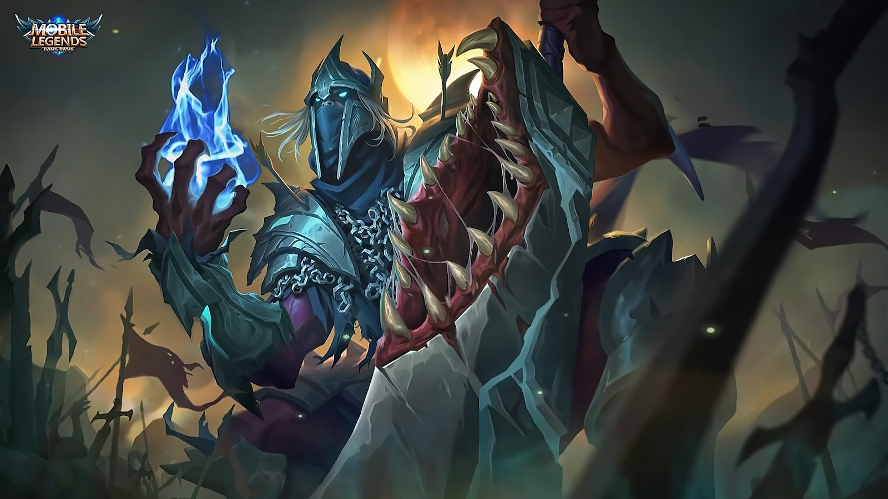

|  | |
|
Ханзо
|
|
|
Ханзо - герой класса убийца. Его особенностью является перевоплощение и огромный урон с ультимативной способности.
|
|
"Амено Хабакири,поглотит тебя"
-Ханзо |
 |
Дата выхода: - 5 декабря 2018 года |
|
| История героя: | |
| В давнее время, дом Акакаге был воспринят как Божество исскуства Ниндзи. На протяжении поколений, Акакаги исследовал и преподавал улучшенные ниндзюцу. Чтобы достичь вершин данного искусства, Акакаги использовали запретные ниндзюцу, для очищения их сердец от зла, гнева и жадности, выражая силу на призванного демона Ханекаге. Но они не ожидали, что находящийся в их телах Ханекаге обретёт сознание... Когда легендарная Сотня Призраков атаковали дом Акакаге, демон объединил их, создав единую сущность. Так началась ужасная вражда между Акакаге и демоном Ханекаге. Серьёзно заплатив, Акакаге использовал Ниндзюцу Кровавой Тени чтоб запечатать демонов... на время. Для запечатывания на долго, Акакаге использовали их священные инструменты для создания легендарного меча, Ame no Habakiri. Вскоре, прародители Акакаге погибли из-за жестоких условий мира. Их ученики спрятали меч в месте, к которому мог добраться только член Акакаге. Малыш из этой семьи знал, что лукавое Божество Смерти, чьё имя Изанами наблюдал за этими событиями и тайно использовал свои искусства ради воскрешения Ханекаге... когда-нибудь. Спустя многие поколения, дом Акакаге разделились на Багровых и Теневых. В Теневой фракции родился сильнейший Акакаге, которого когда-либо видел клан. Как и ожидалось, Ханзо быстро возглавил теневую фракцию. Однажды команда Ханзо раскрыла его секрет. Всё это время Ханзо сливался с силой Ханекаге, питая демона кровью побеждённых. При столкновении с Багровой Фракцией Ханзо безжалостно убил их всех. Поглощая кровь могущественных людей, Ханекаге пришёл в сознание. Ханекаге сказал Ханзо, что его клан спрятал могущественный Ame no Habakiri в секретном месте, куда мог попасть только член Акакаге, использовав Ниндзюцу. Энергичный Ханзо злоупотреблял своей кровью ради приобретения запретного Ниндзюцу и легендарного меча. Остальные члены клана пытались найти предателя, но безуспешно. Одержимый силой демона, Ханзо использовал меч клана против их самих, забрав у их плоть их энергию. Отчаявшись, фракции объединились ради захвата Ханзо. Раненые в течение боя члены клана наблюдали за тем, как Ханзо бежал. Ханзо прятался в убежище, медленно оправляясь от травм. Каждые сутки Ханзо с его мечом тренировался запретным Ниндзюцу, как когда-то делали его предки. Множество лет прошло, но Ханзо не смог достичь вершины. Ханекаге поглотил убитых Ханзо членов клана, превратившись в магическую броню. Ханекаге заключил сделку с Ханзо: в обмен на постоянное кормление, демон поможет Ханзо достичь вершины искусства ниндзя. Обладая возможностью и легендарным мечом, Ханзо стал готов принести кровь в этот мир. | |
Слабые и сильные стороны: Слабые:
Cильные:
Сборка героя:
Эмблемы
Выбор линии:
Так, как Ханзо - убийца, в начале игры он отправляется в лес.
Пассивное: Амэ но Хабакири
Если возле Ханзо кто то погибает, то энергия погибшего будет поглощена им. С крипов, даст 2 крови демона, а герой – 10 крови демона.

1 Навык: Ниндзюцу: Праздник демонов
Ханзо может использовать этот навык только после 5 атак. Используя эту способность, Ханзо может пожирать вражеских миньонов и монстров джунглей. Через некоторое время Ханзо переварит крипа и получит за него золото, опыт, баф и получит 20 крови демона. Этот навык не может съесть лорда или черепаху так же как крипов, но нанесет им урон.

2 Навык: Ниндзюцу: Пожирание душ
Ханзо открывает круговой портал духов в указанной области, нанося 80 (+ 60% физического урона) урона. Враг, стоящий в этой области, будет получать 40 (+ 15% физического урона) урона каждые 0,5 секунды. Этот портал будет закрыт через 8 секунд. Каждый раз, когда портал наносит урон, Ханзо получает не большой Крови Демона.

Ультимативная способность: Киндзюцу: Верховный ниндзя
Ханзо вытягивает Верховного Демона-ниндзя из своего тела. Этот ниндзя-демон получает дополнительно 30% скорости движения и 20% скорости атаки. При использовании этого умения тело Ханзо не может перемещаться. Если оригинальное тело Ханзо потеряет все здоровье, то умрет и ниндзя-демон. Если Ниндзя Демона умрет, Ханзо будет оглушен на некоторое время, а после замедлен. Этот навык потребляет Кровь Демона, которая есть у Ханзо. Если Кровь Демона закончится, то тело Ханзо начнет лететь к ниндзя-демону, пока не воссоединится.

Форма демона
1 Навык(форма демона): Ниндзюцу: Шипы демона
Ханзо сможет использовать этот навык только после пяти атак в режиме верховного ниндзя. Ханзо использует шипы демона, которые дают 300 урона с 15% бонусом физического урона. Этот навык также увеличивает запас крови демона Ханзо на 15%.

2 Навык(форма демона): Ниндзюцу: Разрушитель
Ханзо бросается в указанную область нанося 80 (+ 30% урона физическому) урона и замедляет противников в области на 4 секунды. Использование этого умения при попадании по противнику, даст заряды шипов демона.

Ультимативная способность: Киндзюцу: Верховный ниндзя
Немедленно возвращает Верховного Демона-ниндзя обратно в тело Ханзо..

|